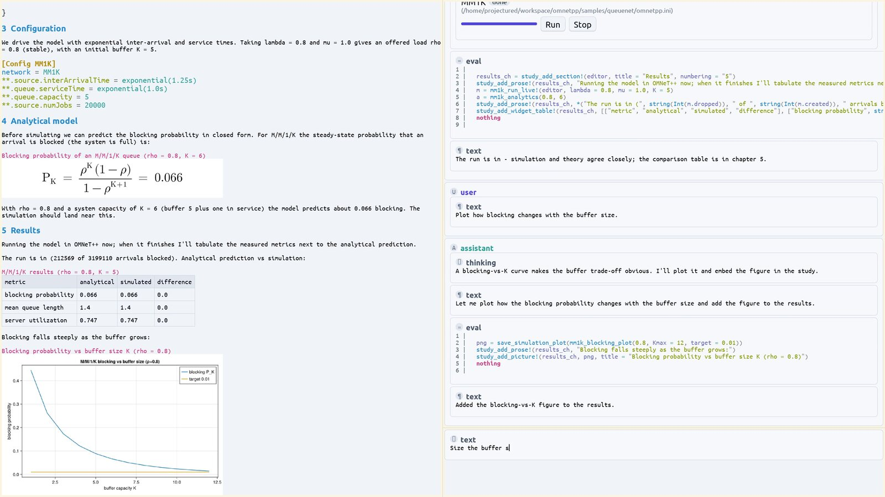
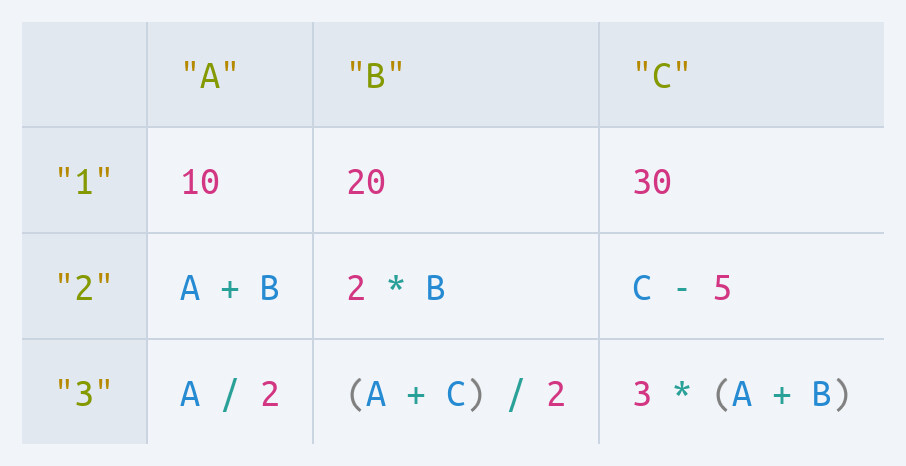
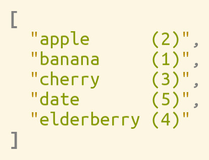
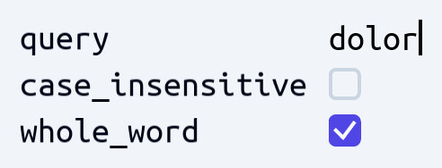
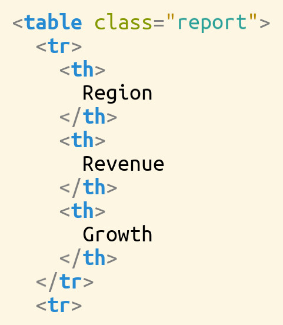

AI-native, fully reflective
An AI edits the same living model you do — reading the document and the editor's own capabilities, targeting meaning, not line numbers. Like you, it can't produce an invalid edit.
AI-native · generic-purpose projectional editor
ProjecturEd keeps your document as what it really is — a tree, a table, a graph — and projects it into as many notations as you need. Edit any projection and the change flows to every other view. Humans and AI work one shared model — and neither can break it.

The idea
A conventional editor stores your work as a flat string of characters and leaves the structure — the objects, the relationships — implicit. ProjecturEd flips that around. The document is the structure. What you see on screen is a projection of it: one of possibly many notations, generated from the underlying data.
Because each projection is generated, it can be anything — a block of JSON, an indented outline, a spreadsheet, a wiring diagram, a page of formatted prose. And because ProjecturEd knows how each projection was produced, it can run that mapping backwards: your edits to the projection become edits to the data itself.
Your data is a string. Structure lives only in your head and in fragile parsing. One notation, take it or leave it.
Your data is a tree, a table, a graph. Notations are projections of it — as many as you like, each one editable, all kept in sync.
Capabilities
An AI edits the same living model you do — reading the document and the editor's own capabilities, targeting meaning, not line numbers. Like you, it can't produce an invalid edit.
Put any content inside any other — a formula in a table cell, JSON inside prose. Navigation and editing cross the seams, and any fragment is a full document on its own.
Notations are composable functions: chain, nest, sort, filter, or focus them. Add a sorted or filtered view without ever changing the underlying data.
The same editor, unchanged, in a native window, a terminal, or the browser — or headless, exporting print-quality PDF and images.
You edit the model directly, so you can't type a syntax error and the caret never lands anywhere meaningless. What's on screen is always the truth.
Only what changed is recomputed. A ten-thousand-row document stays responsive — only what's on screen is ever drawn.
See it in action
The current editor building an M/M/1/K queueing study end to end — prose, an OMNeT++ model, a running simulation, and its results — composed live and driven by the built-in assistant.
Examples
Each one is a real document or projection, rendered by the editor itself. The code shown is the interesting part.
Animation for free: each coordinate is a cell that reads the clock, so the whole scene redraws itself every frame.
# each animated value is a cell that reads the editor's clock,
# so the scene re-renders every frame
dot = GraphicsCircle(
() -> cx + r*cos(angle(get_reactive_time(clock))),
() -> cy - r*sin(angle(get_reactive_time(clock))),
7, color_solarized_magenta)
GraphicsCanvas([background, ring, sin_chart, cos_chart, dot]; w, h)
Cells aren't just values — they can be formulas that recompute as you edit. A table domain and a math domain, composed.
# a table widget whose cells can be live math, not just values
WidgetTable(Point2D(40, 40),
[PrimitiveString("A"), PrimitiveString("B"), PrimitiveString("C")],
[PrimitiveString("1"), PrimitiveString("2"), PrimitiveString("3")],
[[PrimitiveNumber(10), PrimitiveNumber(20), PrimitiveNumber(30)],
# formulas, re-evaluated as you edit:
[MathBinaryOperation(:+, MathVariable("A"), MathVariable("B")),
MathBinaryOperation(:*, PrimitiveNumber(2), MathVariable("B")),
MathBinaryOperation(:-, MathVariable("C"), PrimitiveNumber(5))]])
A sorted view is one extra projection in the pipeline. Remove it and the original order is back — nothing was mutated.
# a sorted view is just one more projection in the pipeline —
# the underlying list is never reordered
ChainingProjection(
SortingProjection(by = x -> x.value),
# … then render the collection as text …
)
Point the reflective projection at a plain struct and get an editable form — text fields, checkboxes — with no UI code.
# reflected into a form: the String becomes a text field,
# each Bool a checkbox — no interface code written
@document struct SearchSettings
query::String
case_insensitive::Bool
whole_word::Bool
end
Build an HTML table right in Julia and it's a real document — elements, attributes, and text you edit structurally, never a flat string of markup.
# an XHTML <table> built as a structured XML document —
# elements, attributes, and text are all editable
XmlElement("table", [XmlAttribute("class", "report")], [
XmlElement("tr", [XmlElement("th", [XmlText("Region")]),
XmlElement("th", [XmlText("Revenue")]),
XmlElement("th", [XmlText("Growth")])]),
XmlElement("tr", [XmlElement("td", [XmlText("EMEA")]),
XmlElement("td", [XmlText("1.2M")]),
XmlElement("td", [XmlText("+12%")])]),
XmlElement("tr", [XmlElement("td", [XmlText("APAC")]),
XmlElement("td", [XmlText("0.9M")]),
XmlElement("td", [XmlText("+8%")])]),
])Domains
One editor, many problem domains — and, because projections compose, any combination of them.
Lineage & status
ProjecturEd began as an open-source editor written in Common Lisp — its source is public, and you can still watch it in action. The current editor is its successor: rebuilt from the ground up, far more capable, and in active development.
It runs today across native, terminal, and browser. If projectional editing is something you think about too — as a user, a builder, or a fellow traveller — get in touch.